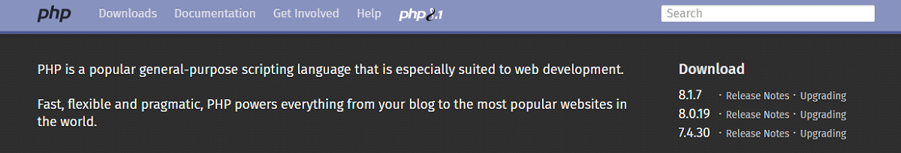

11 самых популярных языков программирования в 2022 — зачем учить Python, JS и C++
Содержание:
По данным различных авторитетных источников, общее количество языков программирования, существующих в мире,
варьируется в пределах от 700 до 9 000. Неудивительно, что у человека, решившего встать на профессиональный
путь разработчика, часто возникает резонный вопрос «с чего же начать?». Мы решили немного упростить ситуацию
с
выбором языка программирования и составили свой список наиболее перспективных и востребованных.
В своем выборе мы опирались на рейтинги популярности языков программирования, включая Индекс TIOBE,
основанный
на поисковых запросах, или его аналог PYPL (PopularitY of Programming Language), рейтинг технологических
платформ Stack Overflow, а также масштабное исследование от ведущего производителя ПО для разработчиков
JetBrains.
При составлении этого списка мы учитывали не только на топовые рейтинги, но и на такие важнейшие
преимущества
языков программирования, как их востребованность рынком, функциональные возможности, сложность для изучения,
а
также перспективы в ближайшем будущем. Для удобства мы рассортируем список по популярности — топ языков
программирования откроет самый востребованный из них.
В этой статье будут не только разобраны плюсы и минусы самых популярных языков программирования, но и даны
рекомендации по источникам, где можно начать знакомство с ними. Как несложно догадаться, большинство из них
представлены на английском, поэтому знание этого языка станет базовым и крайне необходимым навыком для
будущего
разработчика.
Python
Уровень: начальный.
Необходимые навыки: высокая самообучаемость, развитое аналитическое и абстрактное мышление.
Области применения: веб-разработка, десктопные графические интерфейсы, бизнес-приложения, машинное обучение
(ML) и глубокое обучение (DL), наука о данных (Data science), искусственный интеллект (AI), игры,
микроконтроллеры, анализ и визуализация данных.
Плюсы:
Повышенная производительность.
Интуитивно простое чтение и написание.
Развитая официальная документация и учебные пособия.
Динамическая типизация — компиляция скриптов происходит непосредственно во время выполнения.
Интерпретируемый язык выполняет код построчно и сообщает об ошибках последовательно, что упрощает
отладку.
Простая интеграция с веб-службами.
Обширная нативная библиотека и упрощенный экспорт со встроенным диспетчером пакетов Python (pip).
Может масштабировать даже самые сложные приложения.
Идеально подходит для создания прототипов и быстрого тестирования идей.
Минусы:
Низкая скорость. Построчное выполнение кода часто приводит к его медленному выполнению.
Большая нагрузка на память. Производительность Python требует компромисса — повышенного потребления
системных ресурсов.
Из-за повышенного потребления памяти и низкой скорости, не подходит для разработки мобильных и фронтэнд
приложений.
Плохо развитое взаимодействие с базами данных.
Возможны ошибки выполнения (Runtime Error), связанные с динамическим изменением типа данных переменной.
Из-за этого код на Python требует более тщательного тестирования.
Не поддерживает многопоточность из-за встроенного механизма глобальной блокировки интерпретатора (GIL,
Global Interpreter Lock)
Почему нужно изучать Python
В последние годы Python возглавляет большинство крупнейших рейтингов самых популярных языков разработки. Это
бесплатный язык разработки с открытым исходным кодом считается одним из лучших «входных билетов» в
программирование для новичков. Ведь его отличает предельно простой синтаксис команд, схожий с английским
языком
и крайне высокая степень абстракции.
Python не только часто возглавляет список самых легких языков программирования, но и считается одним из
наиболее универсальных. Он одинаково хорошо справляется с созданием веб-приложений и разработкой продуктов
для
обучения искусственного интеллекта, а также отлично подходит для игр и высокотехнологичных мультимедиа
продуктов.
Python используется для разработки пакетов 2D-изображений и 3D-анимации, таких, как Blender, Inkscape и
Autodesk. Он также применялся для разработки ряда высокобюджетных видеоигр, включая Civilization IV, Vegas
Trike и Toontown. На Python написаны многие научные и вычислительные приложения, такие как FreeCAD и Abacus,
а
также такие популярные веб-сайты, как YouTube, Quora, Pinterest и Instagram.
Где изучать
Официальная документация «The Python Tutorial».
Руководство «Learn Python» от Berkeley Boot Camps.
Видеокурс «Learn Python» от freeCodeCamp.
Подкаст «The Real Python» от Real Python.
Курс «Learn Python 2» от Codecademy.
Курс «Intro to Computer Science» от Udacity.
Курс «Поколение Python» от Stepik.
JavaScript
Уровень: от начального до среднего.
Необходимые навыки: основы HTML и CSS для определения содержимого и макета веб-страниц.
Области применения: фронтэнд, бэкэнд (Node.js), мобильные приложения (React Native), игры.
Плюсы:
Язык прост в освоении и реализации.
Широкая сфера применения.
Быстрота — не требует компиляции и может работать сразу в браузере на стороне клиента.
Снижает нагрузку на сервер веб-сайта, так как работает на стороне клиента.
Регулярные обновления через спецификацию ECMAScript (ES).
Много полезных дополнений для расширения функциональности и кастомизации (например, Greasemonkey).
Много ресурсов и отличная поддержка сообщества.
Хорошая совместимость с другими языками программирования.
Минусы:
Веб-браузеры могут отключать выполнение кода JavaScript, поскольку он применяется для создания
всплывающих окон с рекламой, которые могут содержать вредоносный контент.
Может интерпретироваться по-разному разными браузерами, что затрудняет написание кросс-браузерного кода.
Нет встроенной функции для выполнения клонирования или эквивалентного метода.
Разрешает только одиночное наследование.
Почему нужно изучать JavaScript
Javascript или JS неслучайно долгие годы удерживал звание титул наиболее популярного языка
программирования
в
мире. Этот высокоуровневый язык разработки стал одной из главных технологий, лежащих в основе работы
Всемирной
паутины. Сегодня JS и другие языки на спецификации ES (например, ActionScript и TypeScript) используют в
качестве клиентского языка программирования более 90 % всех веб-сайтов Интернета.
Кстати. JavaScript часто путают с Java, хотя это два совершенно разных языка. Javascript был создан в
1995
году
и первоначально назывался LiveScript. Однако из-за популярности в то время Java, его рекламировали как
«младшего брата» Java, что позже отразилось в его названии.
Основная специализация JavaScript — фронтэнд. Этот язык программирования востребован в разработке
интерактивных
интерфейсных приложений, например, всплывающих окон. Однако JS универсален и вполне может претендовать на
роль
языка фулстек-разработки. Он одинаково эффективен для создания как серверных, так и клиентских скриптов.
Сегодня многие разработчики работают с NodeJS — средой выполнения на основе JavaScript, которая позволяет
использовать JS для запуска сценариев на стороне сервера. Например, для создания динамического
содержимого
веб-страницы до того, как страница будет отправлена в веб-браузер пользователя.
Где изучать
Учебник «JavaScript Guide» от Mozilla Developer Network.
Курсы «Coding Resources: Learn JavaScript» от Berkeley Boot Camps
Видеокурс «Learn JavaScript» от freeCodeCamp.
Видеокурс «Learn JavaScript By Building Seven Games» от freeCodeCamp.
Уроки и видекурсы «JavaScript 30».
Курсы и инструкции «The Modern JavaScript Tutorial» от сообщества javascript.info и его русскоязычная
версия.
Java
Уровень: средний.
Необходимые навыки: комплексный подход к решению проблем, знание объектно-ориентированной структуры.
Области применения: мобильная разработка (Android), кроссплатформенное ПО для настольных ПК, геймдев.
Плюсы:
Независимость от платформы (благодаря функции JVM) и объектно-ориентированное программирование.
Повышенная производительность и надежность.
Изобилие библиотек с открытым исходным кодом.
Автоматическое выделение памяти и сборка мусора.
Система распределения стека.
Высокая безопасность благодаря исключению явного указателя и включению менеджера безопасности,
ответственного за определение доступа к классам.
Идеально подходит для распределенных вычислений.
Предлагает множество API-интерфейсов для выполнения различных задач, таких как подключение к базе
данных,
работа в сети, утилиты и синтаксический анализ XML.
Поддерживает многопоточность
Java используют в своем технологическом стеке такие компании, как Amazon, Adobe, Flipkart и Instagram.
Google создала на основе Java превосходную среду для Android-разработки — Android Studio.
Минусы:
Отсутствие шаблонов ограничивает создание качественных структур данных.
Ресурсоемкое управление памятью.
Медленнее, чем языки программирования, скомпилированные в собственном коде, такие как C и C++.
Почему стоит изучать Java
Java — один из самых популярных языков программирования в мире сегодня используется в более чем в 3 млрд.
устройств. Его можно применять для самых разных проектов — от написания кода приложений для смартфонов
Android
до создания сложных настольных приложений. Хотя Java основан на C++, он немного проще в изучении и
использовании, особенно для начинающих.
Одна из фундаментальных идей разработчиков Java заключалась в том, чтобы создать язык
программирования,
который
позволил бы их коду работать на двух совершенно непохожих друг на друга устройствах. Это иллюстрирует и
лозунг
Java: «Напиши один раз – запускай где угодно» (Write once, run anywhere).
Язык Java популярен для разработки на всех платформах, операционных системах и устройствах, но особенно
широкое
применение находит сегодня в создании мобильных приложений для Android. Эта универсальность и гибкость
делают
Java одним из самых востребованных и высокооплачиваемых языков программирования в мире.
Где изучать
Инструкции и уроки «Learn Java» с официального ресурса dev.java.
Курс «Полный курс Андроид + Java с нуля» от Udemy.
Курс «Java Programming Masterclass (Java 11 & 17)» от Udemy.
Курс «Learn Java» от Codecademy
Лекции и тренинги «Real-World Java Exercises» от CodeGym
C/C++
Уровень: средний и продвинутый.
Необходимые навыки: комплексный подход к решению, базовые знания ПК. Поскольку C и C++ ориентированы на
низкоуровневое управление компьютерными ресурсами, полезно знать такие функции компьютера, как управление
памятью.
Области применения: настольные приложения и ПО, мобильные приложения, игровые движки и игры, VR,
робототехника,
cloud computing, веб-приложения.
Плюсы:
Более быстрое выполнение программ, чем в большинстве других языков программирования [C/C++].
Формирует основу для понимания более сложных языков программирования [C/C++].
Предпочтительный язык для разработки приложений для нескольких устройств и платформ [C++].
Широкий спектр областей применения, таких как игры, приложения с графическим интерфейсом и
математическое
моделирование в реальном времени [C++].
Облегчает доступ к заблокированным или скрытым объектам с помощью других языков программирования [C].
Высокая степень портативности [C].
Процедурно-ориентированный язык с группой функциональных модулей и блоков. Это упрощает отладку,
тестирование и обслуживание программ [C].
Богатая библиотека функций [C++].
Работает близко к системному оборудованию и предлагает низкий уровень абстракции [C/C++].
Поддержка обработки исключений и перегрузки функций [C++].
Поставляется со стандартной библиотекой шаблонов (STL) — пулом готовых библиотек для различных структур
данных, арифметических операций и алгоритмов [C++].
Минусы:
Не подходит для новичков в программировании [C/C++].
Сложный синтаксис [C/C++].
Не поддерживает пространство имен программ [C].
Менее эффективная объектно-ориентированная система по сравнению с другими языками программирования на
основе ООП [C++].
Необходимо вручную создавать высокоуровневые конструкции [C].
Нет сборки мусора или динамического выделения памяти [C/C++].
Нет проверки во время выполнения [C/C++].
Нет строгой проверки типов [C].
Проблемы с переполнением буфера и повреждением памяти [C/C++].
Меньшая стандартная библиотека [C].
Почему стоит изучать C++
Ни одно настоящее сравнение языков программирования не может обойтись без этой пары. C++ — прямой потомок
языка
C, который считается настоящим «динозавром» среди языков программирования. C был выпущен аж в 1997 году и
продолжает активно использоваться и сегодня. Почти все низкоуровневые системы, такие как ОС и файловые
системы,
написаны на C/C++.
C++ — мощный, высокопроизводительный язык, хотя и низкоуровневый, так как использует низкую степень
абстракции.
А это означает, что код на нем труднее «читать». Изучение низкоуровневого языка требует больше времени на
понимание того, как работает сам язык. Поэтому у новичка, осваивающего C++, будет меньше времени для
изучения
основ компьютерного программирования в целом. Кроме того, при написании приложение на C++ с нуля,
разработчику
потребуется написать много кода.
С другой стороны, этот язык чрезвычайно быстр, стабилен, масштабируем и эффективен. Именно поэтому C++
используют многие ресурсоемкие программы. Например, некоторые из самых красивых и популярных 3D-игр:
Metro
2033, The Elder Scrolls V: Skyrim, Fallout 4, серии Assassin’s Creed, Battlefield/Battlefront, Medal of
Honor,
Need For Speed. Изучение C++ будет хорошим выбором для тех разработчиков, кто уже знаком с C и хочет
работать
над крупными проектами и иметь большой контроль над выполнением программ.
Где изучать
Официальная «Документация по языку C++» от Microsoft.
Курсы по специализации «Coding for Everyone: C and C++» от Coursera.
Курсы «C++ For C Programmers» от Coursera.
Курсы «C Programming For Beginners the C Language» от Udemy.
Видеокурсы «Основы C++. Программирование для начинающих» от SimpleCode.
PHP

Уровень: начальный и средний.
Необходимые навыки: знание основ работы с языками программирования.
Области применения: бекэнд- и WordPress-разработка.
Простота разработки и возможность интеграции со многими различными инструментами.
Гибкость в подключении к базам данных.
Обилие мощных фреймворков.
Первоклассная отладка с Xdebug.
Гигантская поддержка сообщества и огромная экосистема.
Множество инструментов автоматизации для тестирования и развертывания приложений.
Поддерживает объектно-ориентированные и функциональные парадигмы программирования.
Минусы:
Разработка веб-сайтов полностью на PHP происходит медленнее по сравнению с использованием других
вариантов.
Не подходит для больших приложений.
Недостатки с точки зрения безопасности.
Плохая обработка ошибок.
Не может поддерживать большое количество приложений.
Почему стоит изучать PHP
Сегодня PHP является одним из самых популярных языков бекэнд-программирования в мире. Это скриптовый язык,
работающий на стороне сервера для создания веб-страниц, написанных на HTML. Сегодня 80% из 10 миллионов
крупнейших веб-сайтов в мире используют PHP.
Хотя PHP сталкивается с жесткой конкуренцией со стороны Python и JavaScript, рынку по-прежнему требуется
большое количество PHP-разработчиков в связи с постоянным развитием веб-ориентированных технологий. Он
пригодится тем, кто хочет присоединиться к организации в качестве бекэнд-разработчика.
Кстати. PHP никогда не предназначался для того, чтобы стать языком программирования. Первоначально он был
создан как набор инструментов, помогающий его создателю Расмусу Лердорфу поддерживать свою личную домашнюю
страницу — Personal Home Page или PHP.
Где изучать
Официальное «Руководство по PHP» от php.net.
Уроки «PHP Tutorial» от W3Schools.
Обучающий онлайн-проект «PHP: The Right Way».
Видеокурс «PHP Programming Language Tutorial» от freeCodeCamp.
Курс «Learn PHP» от Codeacademy.
Swift
Уровень: начальный.
Необходимые навыки: готовность тратить время на чтение широкодоступных учебных пособий, предварительный опыт
работы с языками программирования не требуется.
Области применения: мобильная разработка (iOS), разработка под Linux.
Плюсы:
Требует меньше навыков программирования по сравнению с другими языками.
Полная поддержка кода Objective-C.
Ускоряет процесс разработки.
Повышенная производительность.
Поддерживает динамические библиотеки.
Минусы:
Относительная «молодость» языка.
Плохое взаимодействие со сторонними инструментами.
Отсутствие поддержки более ранних версий iOS.
Почему стоит изучать Swift
Язык программирования с открытым исходным кодом Swift был создан Apple в 2014 году для работы с платформами
Apple Cocoa и Cocoa Touch. С этого времени он заменил Objective-C в качестве основного языка, применяемого
Apple для разработки программ под Mac OS X, iOS и Linux. Он продолжает набирать развиваться и набирать
обороты, вместе с растущей популярностью iOS.
Синтаксис Swift похож на английский язык, в этом он напоминает Java и C#. Его отличает хорошо
оптимизированный код и очень высокая производительность, что позволяет ему эффективно масштабироваться.
Кроме того, он поддерживает работу со старыми языками, такими как Objective-C.
Это обязательный к изучению язык для каждого, кто хочет создавать приложения для App Store. Он позволяет
писать приложения для часов, планшетов, компьютеров, смартфонов, телевизоров и серверов.
Swift используется в популярных приложениях для iOS, таких, как WordPress, Mozilla Firefox, SoundCloud и,
даже в игре Flappy Bird. Помимо самой Apple, этот язык входит в технологические стеки таких компаний, как
Instagram, Uber и Slack.
Где изучать
Официальная документация от Apple.
Курс «A better way to learn Swift» от Tthinkster.
Руководства по работе со Swift от raywenderlich.com.
Курс «Build your very first iOS app» от edX.
Курсы «Swift from scratch» от Udemy.
Golang (Go)
Уровень: начальный, средний.
Необходимые навыки: процесс обучения сильно облегчит знание хотя бы одного языка программирования; в
противном случае понадобятся терпение и готовность учиться.
Области применения: приложения Google, системное/сетевое программирование, монтаж аудио/видео, работа с
большими данными.
Плюсы:
Минималистичность.
Относительно легок в изучении, благодаря понятному синтаксису.
Язык со статической типизацией, что хорошо влияет на безопасность.
Широкая совместимость.
Язык компилируется в машинный код, что обеспечивает ему быстроту выполнения.
Поддерживает процессы автоматизации, что облегчает работу в сфере искусственного интеллекта и науки о
данных.
Обширная стандартная библиотека, предлагающая ряд встроенных функций для работы с примитивными типами.
Идеально подходит для создания SPA (одностраничных приложений).
Минусы:
Отсутствие дженериков, вынуждающее писать больше кода, чем на других языках.
Отсутствие виртуальной машины снижает эффективность сложных программ.
Неявные интерфейсы.
Не хватает универсальности.
Нет графической библиотеки (GUI).
Поддержка непривилегированных библиотек.
Сообщество разработчиков Go относительно невелико.
Почему стоит изучать Golang
Go, также известный как Golang, был разработан Google в 2007 году для API и веб-приложений. В последнее
время он стал одним из самых быстрорастущих языков бекэнд-программирования, благодаря своей простоте, а
также способности работать с многоядерными и сетевыми системами и огромными кодовыми базами.
Go был создан для удовлетворения потребностей программистов, работающих над крупными проектами. Он завоевал
популярность среди многих крупных ИТ-компаний, включая Google, Uber, Twitch, Dropbox, из-за своей простой и
современной структуры, а также привычного синтаксиса. Сама компания Google применяет Go для поддержки
собственной обширной сети серверов, а также своей облачной платформы Google Cloud Platform (GCP).
Golang обеспечивает отличную поддержку многопоточности, поэтому его часто используют компании, которые в
значительной степени полагаются на распределенные системы, а также стартапы в Силиконовой долине. Гибкость и
производительность Go сделала его популярным инструментом разработки для специалистов по data science.
Где изучать
Официальное руководство «Get started with Go» от Google.
Руководство «Go: The Complete Developer’s Guide» от Udemy.
Курс «Go Programming (Golang): The Complete Developer’s Guide» от ZTM.
Курсы «Специализация Programming with Google Go» от Coursera.
Курс «Learn Go» от Codecademy.
C#
Уровень: от начального до среднего.
Необходимые навыки: базовая компьютерная грамотность, понимание основных концепций объектно-ориентированного
программирования (инкапсуляция, полиморфизм, абстракция, наследование, интерфейсы), базовые знания C, C++
или Java, чтобы иметь начальное представление о синтаксисе C#.
Области применения: разработка игр (Unity), десктопные приложения (Microsoft, Windows), веб-сервисы и
приложения.
Плюсы:
Прост в освоении и понимании, особенно для тех, кто знаком с основами
объектно-ориентированного
программирования.
Это мультипарадигменный объектно-ориентированный язык поддерживает универсальный, императивный,
функциональный и декларативный стили программирования.
Полностью интегрирован с библиотеками .NET.
Идеально подходит для всех типов разработки под Windows.
Способен работать с общими кодовыми базами.
Богатый набор библиотечных функций и типов данных.
Поддерживает безопасность типов.
Быстрое время компиляции и выполнения.
Используется такими ведущими IT-компаниями, как Microsoft, Stack Overflow, Accenture и
Alibaba Travels.
Минусы:
Разрешает указатели в «небезопасных» блоках.
Почти все переменные являются ссылками, а освобождение памяти осуществляется с помощью сборщика мусора.
Предлагает меньшую гибкость, чем C++.
Устранение ошибок требует серьезного опыта и знаний.
Почему стоит изучать C#
Первоначально разработанный Microsoft для работы на платформе .NET, язык C# (произносится как C Sharp,
«Си-шарп») основан на C и C++. Этот высокоуровневый язык немного напоминает английский, что облегчает
восприятие C# новичками. В отличие от своего ближайшего «родственника» C++, он абстрагирует многие сложные
задачи, необходимые для того, чтобы компьютер мог работать с кодом.
C# — основной язык разработки программного обеспечения и программ для платформы Microsoft. Еще одной
популярной сферой применения для C# является игровая индустрия. Например, это рекомендуемый язык для
создания приложений на игровом движке Unity. Согласно открытой статистике, более 30% наиболее популярных
мобильных игр были созданы на C#.
Где изучать
Официальные курсы, инструкции и видеолекции «Learn C#» от Microsoft.
Видеокурс «C# Tutorial» от freeCodeCamp.
Курс «Learn C# Programming» от Tutorials teacher.
Онлайн-уроки «Learning C# Made Easy» от C# station.
Интерактивные онлайн-уроки на ресурсе LearnCS.org.
Ruby
Уровень: начальный.
Необходимые навыки: комплексный подход к решению проблем, развитое абстрактное мышление (способность
визуализировать то, что хотят видеть пользователи приложения).
Области применения: бекэнд веб-разработка.
Плюсы:
Позволяет быстро создавать работающие приложения и веб-сайты.
Простой для чтения и написания синтаксис.
Обеспечивает хороший стиль программирования.
Низкая кривая обучения.
Хорошо развитое сообщество.
Много полезных дополнительных инструментов.
Высокая востребованность и зарплаты специалистов.
Минусы:
Используется не так часто, как другие аналогичные языки программирования (например, Python или Java).
Низкая скорость выполнения приложения.
Отсутствие гибкости при сборке веб-приложений с нестандартными функциями.
Почему стоит изучать Ruby
Ruby — интерпретируемый, полностью объектно-ориентированный язык программирования, разработанный в 1990-х
годах. Как технология с простым синтаксисом, она часто используется для написания скриптов, обработки текста
и создания прототипов новых приложений.
Ruby — отличный язык программирования для тех, кто хочет в быстро и успешно создать приложение с нуля,
особенно самостоятельно.
Помимо простоты в обучении, существенным преимуществом Ruby является обилие мощных веб-фреймворков и
приложений, написанных на этом языке. В их число, например, входит крайне популярный в ЛЮБОМ СЛУЧАЕ,
фреймворк Ruby on Rails (RoR).
Этот стабильный и гибкий язык используют такие крупные международные компании, как Twitch, Shopify,
Starbucks, Twitter, Hulu, Groupon, Airbnb и GitHub. Более того, Ruby регулярно попадает в верхние строчки
популярных рейтингов самых высокооплачиваемых языков программирования в мире.
Где изучать
Официальное руководство «Ruby за двадцать минут».
Курс «Learn Ruby» от Codecademy.
Курс «The Complete Ruby on Rails Developer Course» от Udemy.
Курс «Learning Ruby: From Zero to Hero» от freeCodeCamp:
Kotlin
Уровень: средний, продвинутый.
Необходимые навыки: опыт работы с языками программирования, в частности с Java.
Области применения: Android-, веб-, мобильная, серверная и десктоп разработка.
Плюсы:
Надежность — Kotlin прошел длительный период альфа- и бета-тестирования, к тому же имеет официальную
поддержку от Google.
Короткое время разработки.
100% совместимость с Java.
Лаконичный код и структурированный параллелизм.
Поддержка отладки — обнаружение ошибок во время компиляции.
Поддержка многих популярных IDE, включая Android Studio, Atom, SublimeText и Vim.
Примерно на 20% меньше кода по сравнению с Java.
Минусы:
Относительно нестабильная скорость компиляции.
Трудность внедрения в производства из-за отсутствия большого числа Kotlin-разработчиков.
Нет статического ключевого слова.
Почему стоит изучать Kotlin
Kotlin — язык программирования общего назначения из семейства JVM с автоматическим выводом типов.
Первоначально разработан и представлен JetBrains в 2011 году как Project Kotlin. Первая версия была
официально выпущена в 2016 году. Он совместим с Java и поддерживает функциональные языки программирования.
С 2019 года Kotlin является предпочтительным языком Google для приложений на Android. Его используют такие
крупные компании, как Coursera, Pinterest, Uber, Trello и Amazon. Поэтому те, кто только начинает карьеру и
задумываются о том, какой язык программирования учить новичку для мобильной разработки под Google,
определенно должны остановить выбор на Kotlin.
Где изучать
Официальная документация «Kotlin docs»
Курс «Learn Kotlin» от Codecademy.
Курс «Kotlin Bootcamp for Programmers» от Udemy.
Видеокурс «Kotlin Tutorial for Beginners: Basics and Fundamentals for Android» от Smartherd.
Perl
Уровень: начальный, средний.
Необходимые навыки: знание основ работы с языками программирования.
Области применения: сетевое программирование, разработка графических интерфейсов, веб-разработка, системное
администрирование, мобильная разработка.
Плюсы:
Чрезвычайно мощный язык программирования.
Платформонезависимый.
Следует традиционному подходу, используя фигурные скобки для функций и циклов.
Универсальный.
Может быть императивным, процедурным, функциональным или объектно-ориентированным, в зависимости от
необходимости.
Минусы:
Код сложен в прочтении, особенно для новичков.
Как и все скриптовые языки медленно работает при многозадачности.
Объектно-ориентированность не реализована должным образом.
Плохая обработка аргументов.
Не портативный.
Нет оболочки интерпретатора.
Почему стоит изучать Perl
Этот язык сценариев высокого уровня впервые появился в 1987 году и с тех пор превратился в небольшое
семейство двух отдельных языков — Perl 5 и Perl 6. Первоначально Perl (The Practical Extraction and
Report
Language) предназначался для обработки текста и манипулирования им, но с тех пор он нашел и другие сферы
применения — от веб-разработки до системного администрирования.
Сегодня Perl превратился в мощный инструмент, который можно одинаково эффективно использовать практически
в
любой операционной системе. Поэтому его иногда называют «швейцарским армейским ножом» компьютерных
языков.
Perl берет лучшие черты из других языков программирования, таких как, например, C, PHP или Python.
Однако, в
отличие от «змеиного языка», Perl обычно предлагает несколько решений одной конкретной проблемы, что
делает
его похожим на Ruby.
Perl — сильный и универсальный язык программирования, которому несложно научиться. Более того, многие
опросы
показывают, что программисты, работающие с этим языком, зарабатывают на 10-15 % больше своих коллег.
Однако,
прежде чем браться за Perl, необходимо убедиться, что компания, на работу в которой вы нацелены,
использует
его в своем технологическом стеке.
Где изучать
Официальное обучающее руководство «Learn Perl».
Курс «Learn Perl 5 By Doing It» от Udemy.
Курс «Perl Programming for Beginners» от Udemy.
Курс «Learn Perl from Scratch» от Educative.
Заключение
Конечно, сделать полноценное сравнение преимуществ и недостатков всех самых популярных языков
программирования в рамка обзора просто невозможно. В частности, в этом обзоре не были упомянуты такие
актуальные языки программирования, как SQL, HTML, Visual Basic, R, Assembly, Delphi, Rust, Matlab, Lua и
многие другие.
Но мы не и ставили задачи создать всеобъемлющий рейтинг языков программирования. Для этого есть авторитетные
источники, вроде упомянутого выше TIOBE Index. Эта статья стремится дать простой ответ на сложный вопрос,
«какой язык программирования лучше для новичка?». Для этого мы отобрали лишь те языки, которые помогут
начинающему программисту или разработчику, желающему сменить специализацию, относительно быстро получить
первые практические результаты и перспективную работу.
Обзор самых востребованных языков программирования в 2022 годы мы хотели бы завершить кратким списком, где
самые популярные языки программирования разобраны по своему применению:
Легкость для изучения: Python, Ruby или Javascript.
Востребованность у работодателей: Python или Javascript.
Создание мобильных приложений: Java, C++, Kotlin (предпочтительный язык для Android), Javascript (+
React Native).
Создание приложения для iOS: Swift (язык, выбранный Apple), Javascript (+ React Native).
Фронтэнд-разработка и создание пользовательского интерфейса: JavaScript (позже можно переключиться на
React).
Серверная веб-разработка: JavaScript (+ Node.js), Java, Python, PHP или Ruby.
Разработка игр: C++, C#, JavaScript
Машинное обучение, искусственный интеллект: Python или Java